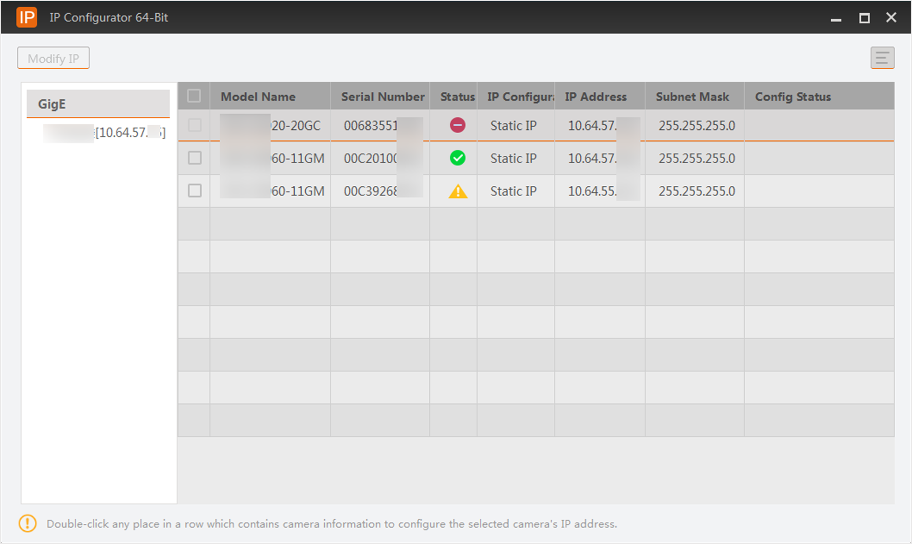

IP Configurator
The online GigE Vision cameras in the same local subnet with the PC on which the Software runs will be enumerated in the device list. You can configure the IP addresses and other network parameters of these cameras.
Click from the Menu Bar to open the tool.

Figure 1 IP ConfiguratorBy default, the window displays all enumerated GigE cameras and their information (model name, device user ID, status, etc.).
-
You can move the cursor to GigE and click to refresh the list.
-
You can click
 to select what camera
information to display on the window.
to select what camera
information to display on the window.
To edit camera IP, ensure the status is Free or Unreachable.
- Free
-
The camera is available and you can edit its IP address.
- In Use
-
The camera is busy. You can check the following:
-
Disconnect the camera, if the Software is live viewing it.
-
Terminate other processes that are accessing the camera.
-
- Unreachable
-
The camera is unreachable due to one of the following 2 reasons:
-
The network of the camera is abnormal. Check the camera network settings.
-
The camera is on the same subnet with the PC on which the Software runs, but NOT in the same network segment. You should modify its IP address to the same network segment with the PC to make the camera available for connection and use.
-
Edit IP Address of a Single Camera
You can modify the IP address of a single camera if the camera status is Free or Unreachable.
Edit IP Addresses of Multiple Cameras
You can batch modify the IP addresses of multiple cameras under the same interface.